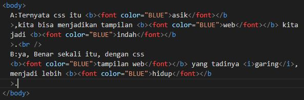
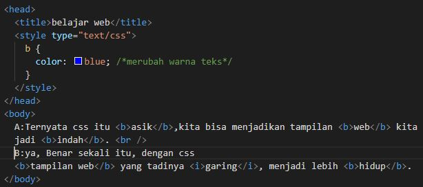

CSS Membuat Coding Lebih sedikit, Namun Hasilnya sama
 Coding Tanpa CSS ***
 Coding Memakai CSS ***
Hasil dari kedua Coding di atas sama, namun memakai CSS lebih simpel :
A:Ternyata css itu asik,kita bisa menjadikan tampilan web kita
jadi indah.
B:ya, Benar sekali itu, dengan css
tampilan web yang tadinya garing,
menjadi lebih hidup.
Berikut beberapa yang bisa dilakukan dengan CSS:
Membuat Transition Effect pada Link
Membuat Top Menu
Membuat Menu Dropdown